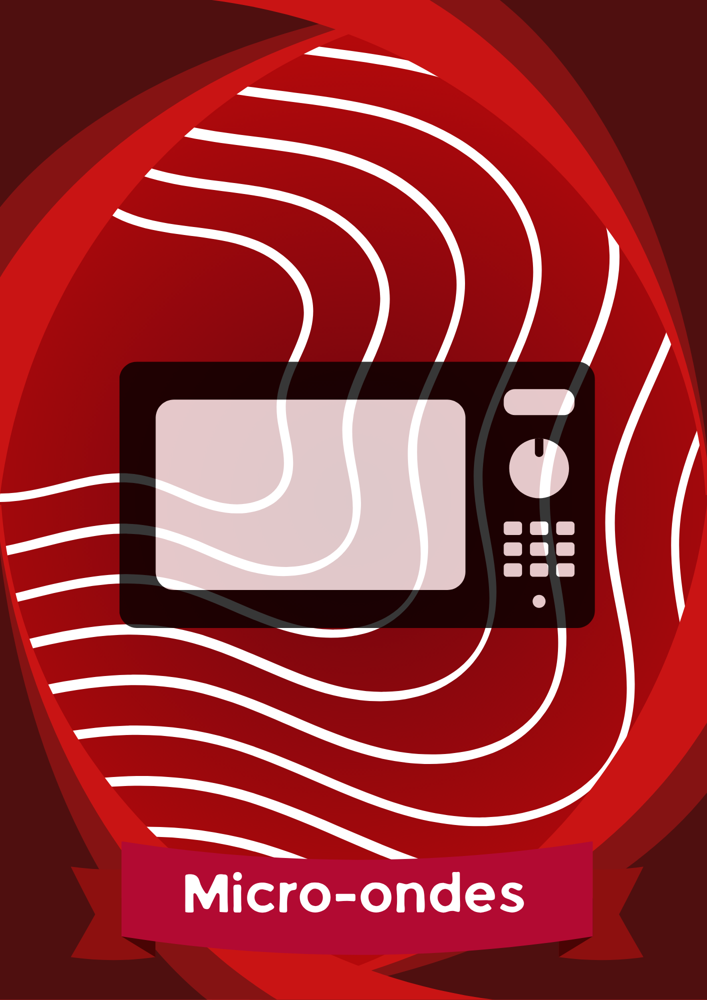
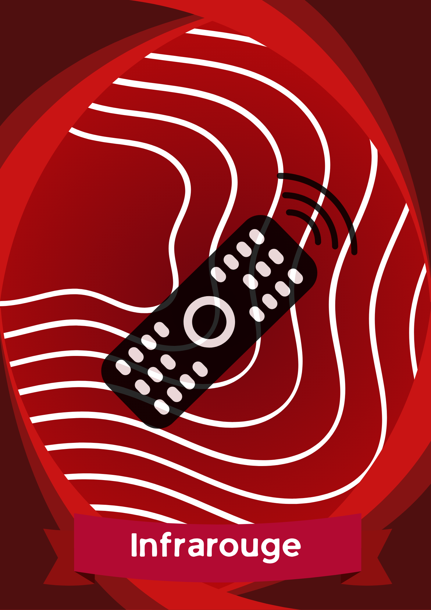
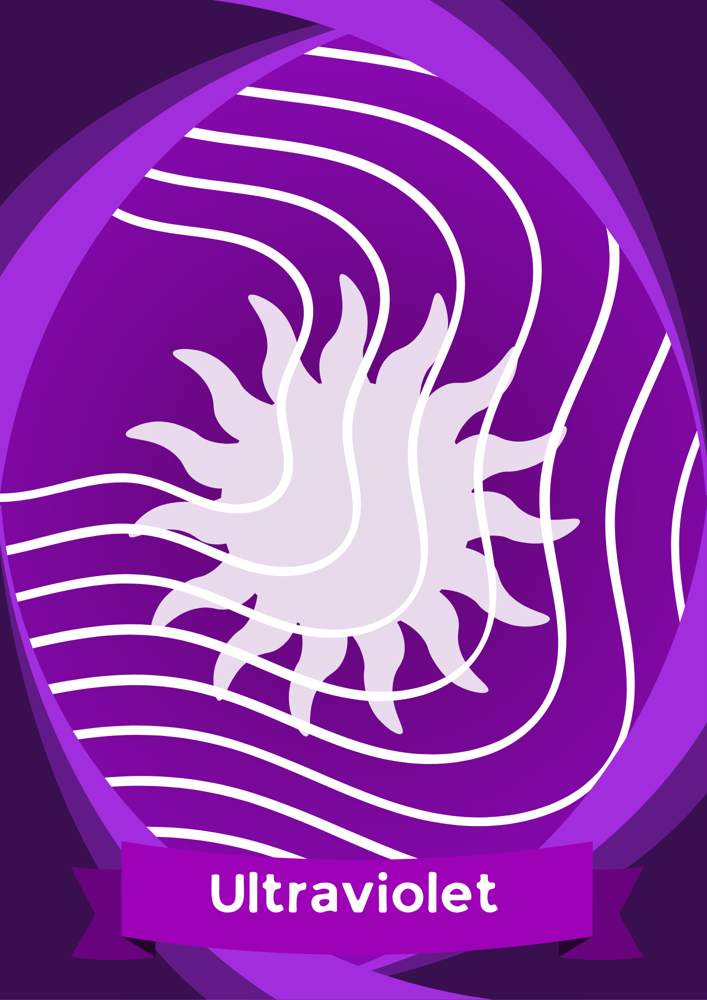
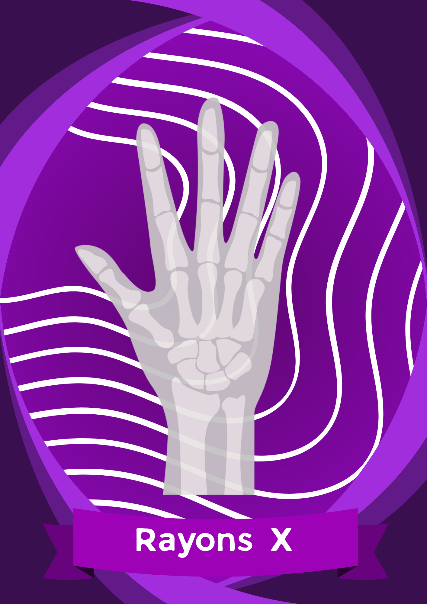
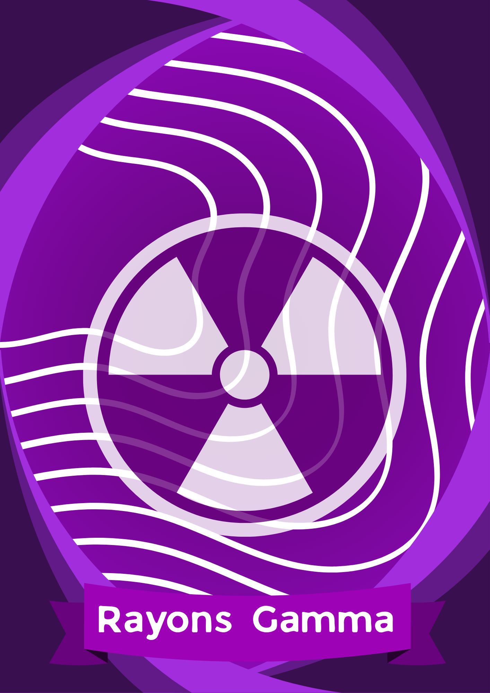
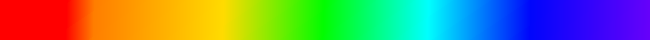

LE SPECTRE ELECTROMAGNETIQUE

Utilisées pour la radio, la télé et le Wi-Fi. Elles ont la plus
grande longueur d'onde et sont partout autour de nous.

Chauffent ta nourriture, mais servent aussi pour les radars et
la communication satellite. Elles font vibrer les molécules
d'eau.

Ce sont des ondes de chaleur. Tout ce qui émet de la chaleur en
produit, même ton corps. On les voit avec des caméras
thermiques.

Invisibles mais puissantes. Le Soleil en émet : elles bronzent…
ou brûlent. Elles servent aussi à désinfecter.

Traversent la peau mais pas les os. Utilisés en médecine pour
voir à l'intérieur du corps sans ouvrir.

Les plus énergétiques. Émis par les étoiles et certains atomes
radioactifs. Dangereux mais utiles en radiothérapie et en
médecine nucléaire.
